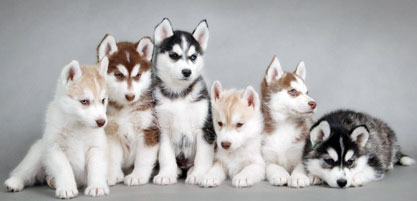
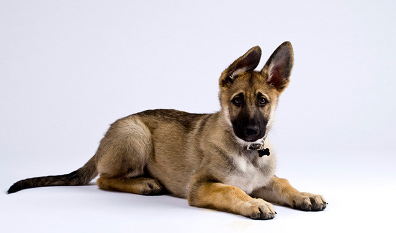

This site is about Cats dogs

Dogs are:
The Siberian Husky is a beautiful dog breed with a thick coat that comes in a multitude of colors and markings. Their blue or multi-colored eyes and striking facial masks only add to the appeal of this breed, which originated in Siberia. It is easy to see why many are drawn to the Siberian’s wolf-like looks, but be aware that this athletic, intelligent dog can be independent and challenging for first-time dog owners. Huskies also put the “H” in Houdini and need a fenced yard that is sunk in the ground to prevent escapes.
The German Shepherd is a breed of medium to large-sized working dog that originated in Germany. The breed's officially recognized name is German Shepherd Dog in the English language (sometimes abbreviated as GSD). The breed is also known as the Alsatian in Britain and Ireland. The German Shepherd is a relatively new breed of dog, with their origin dating to 1899. As part of the Herding Group, German Shepherds are working dogs developed originally for herding sheep. Since that time however, because of their strength, intelligence, trainability, and obedience.
